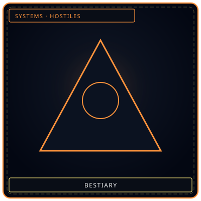
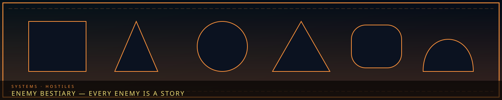
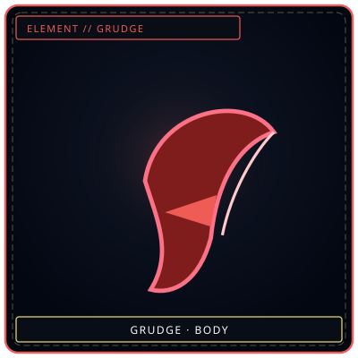

RegisterShapes, not faces
/// RAPID JUMP:
STATUS: ARCHIVE VERIFIED |
CLEARANCE: LEVEL-4 OVERSIGHT |
PROTOCOL: REVERIE DIRECTORATE
ARTICLE
DISCUSSION
SOURCE
HISTORY
YEAR 4,238 · DAWN OF HOPE
SYSTEMS & MECHANICS RECORD
Enemy Bestiary & Hostile Entity Register
Contents
“Every enemy is a story. Every story is a sorrow.”


ToothWhat it attacksOverview
# SOMNARAK — Enemy List
Complete Enemy Codex by Operation
"Every enemy is a story. Every story is a sorrow."
SED Enemies — Exploration Threats
Arc 1: The Undercity
| Enemy | Type | Element | Threat | Behavior |
|---|---|---|---|---|
| Guardian Entity | Sorrow Entity | Weight | High | Protects the Undercity — attacks trespassers |
| Whispering Walls | Environmental | Lament | Low | Ambient sorrow — causes unease, disorientation |
| Han-Tar Pools | Environmental | Weight | Medium | Liquid Han — causes Fracture on contact |
| Undercity Echo | Sorrow Entity | Lament | Low | Faint echoes of the first settlers — passive |
Arc 2: The Forgotten Districts
| Enemy | Type | Element | Threat | Behavior |
|---|---|---|---|---|
| Hollow Residents | Human (adapted) | Mixed | Variable | Not hostile by default — but protective of territory |
| Consumed Buildings | Environmental | Weight | Medium | Buildings that move — walls close in |
| Memory Ghosts | Sorrow Entity | Void | Low | Faint echoes of consumed citizens — passive |
| Han-Spawn | Sorrow Entity | Grudge | Medium | Minor entities born from consumed sorrow |
Arc 3: The Hidden Routes
| Enemy | Type | Element | Threat | Behavior |
|---|---|---|---|---|
| Ancient Guardian | Sorrow Entity | Grudge | Critical | Pre-Structuring entity — 4,200 years of betrayal |
| Route Traps | Environmental | Void | Medium | Han-traps that disorient and confuse |
| Fray Patrols | Human (Fray) | Mixed | Medium | Fray members using the tunnels |
| Echo Spiders | Sorrow Entity | Lament | Low | Minor entities that spin webs of memory |
Arc 4: The Deep Gardens
| Enemy | Type | Element | Threat | Behavior |
|---|---|---|---|---|
| Garden Guardians | Construct | Lament | Medium | Tend the root network — attack intruders |
| Memory Thorns | Environmental | Grudge | Low | Crystallized memory fragments — sharp, painful |
| Dream Blooms | Environmental | Lament | Low | Flowers that induce hallucinations |
| The First Mourner | Entity | All | Unknown | The root of all roots — passive, but overwhelming |
Arc 5: The Border Tunnels
| Enemy | Type | Element | Threat | Behavior |
|---|---|---|---|---|
| Outside Sorrow | Environmental | Weight | High | Raw Han seeping through tunnels |
| Desolate Entities | Sorrow Entity | Mixed | Medium | Entities from the Desolate that breach through tunnels |
| Tunnel Guardians | Sorrow Entity | Grudge | Medium | Entities that protect the tunnels |
| Han Geysers | Environmental | Weight | High | Eruptions of concentrated Han |
Arc 6: The Scar
| Enemy | Type | Element | Threat | Behavior |
|---|---|---|---|---|
| Scar Walker | Sorrow Entity | Grudge | Critical | Guardian of The Scar — attacks intruders |
| Wrath Flame | Sorrow Entity | Grudge | High | Fire entity born from Occlusihan rage |
| Rift Tendrils | Environmental | Weight | Medium | The Scar reaches out — grabbing, pulling |
| Rage Echoes | Sorrow Entity | Grudge | Low | Faint echoes of the six factions' anger |
Arc 7: The Source
| Enemy | Type | Element | Threat | Behavior |
|---|---|---|---|---|
| The First Mourner | Entity | All | Unknown | The source of all sorrow — passive, but overwhelming |
| Sorrow Tides | Environmental | Weight | High | Waves of concentrated sorrow from the source |
| Memory Storms | Environmental | Lament | Medium | Swirling memories that disorient |
| Source Guardians | Sorrow Entity | Mixed | High | Entities born from the source's overflow |
UCD Enemies — Underworld Threats
Arc 1: The Veil Merchants
| Enemy | Type | Element | Threat | Behavior |
|---|---|---|---|---|
| Merchant (Blade) | Human | Grudge | Medium | Armed with Han-crystal blade — direct combat |
| Merchant (Explosive) | Human | Weight | High | Throws Han-energy explosives — area damage |
| Merchant (Fleeing) | Human | Void | Low | Tries to escape — non-combatant |
| Counterfeit Veil | Environmental | Void | Low | False Veil-Stones — cause false sense of safety |
| Captive Entity | Sorrow Entity | Lament | Low | Minor entity used as raw material — passive |
Arc 2: The Memory Washers
| Enemy | Type | Element | Threat | Behavior |
|---|---|---|---|---|
| Washer (Rig Operator) | Human | Void | Medium | Operates the Wash-Rig — erases memories |
| Washer (Guard) | Human | Grudge | Medium | Armed guard — protects the operation |
| Washer (Leader) | Human | Void+Grudge | High | The Washers' leader — skilled, desperate |
| Memory Victims | Human (erased) | Void | Low | Citizens with erased memories — confused, dangerous |
| Wash-Rig | Environmental | Void | High | The device itself — causes memory loss on contact |
Arc 3: The Harvesters
| Enemy | Type | Element | Threat | Behavior |
|---|---|---|---|---|
| Harvester (Hook) | Human | Grudge | Medium | Armed with Harvest Hook — extracts Echoes |
| Harvester (Trap) | Human | Weight | Medium | Sets Han-traps — captures victims |
| Harvester (Leader) | Human | Grudge+Weight | High | The Harvesters' leader — ruthless |
| Echo Drains | Environmental | Void | Medium | Areas where Echoes have been drained — empty, cold |
| Harvested Victims | Human (drained) | Void | Low | Citizens stripped of Echoes — hollow, listless |
Arc 4: The Debt Brokers
| Enemy | Type | Element | Threat | Behavior |
|---|---|---|---|---|
| Broker (Ledger) | Human | Weight | Medium | Tracks debts — marks targets |
| Broker (Enforcer) | Human | Grudge | Medium | Collects debts by force |
| Broker (Leader) | Human | Weight+Grudge | High | The Brokers' leader — connected to the Council |
| Phantom Debts | Environmental | Weight | Medium | False debts that manifest as physical weight |
| Debt Shadows | Sorrow Entity | Weight | Low | Shadows that follow debtors |
Arc 5: The Entity Traders
| Enemy | Type | Element | Threat | Behavior |
|---|---|---|---|---|
| Trader (Cage) | Human | Void | Medium | Carries Containment Cubes — captures entities |
| Trader (Auctioneer) | Human | Void+Grudge | Medium | Sells entities — charismatic, dangerous |
| Trader (Leader) | Human | Void+Grudge+Weight | High | The Traders' leader — desperate |
| Contained Entities | Sorrow Entity | Mixed | Variable | Entities in cages — may break free |
| Auction House | Environmental | Mixed | Medium | The auction location — chaotic, dangerous |
Arc 6: The Underworld King
| Enemy | Type | Element | Threat | Behavior |
|---|---|---|---|---|
| Fray Leaders | Human | Mixed | High | All five Fray leaders united |
| Elite Guards | Human | Grudge+Weight | High | The King's personal guard |
| The Underworld King | Human | All | Critical | The Frays' true leader — powerful, desperate |
| The Throne Room | Environmental | Mixed | High | The King's domain — Han-dense, dangerous |
R.D. Enemies — Facility Threats
Floor 2: Entity Breaches
| Enemy | Type | Element | Threat | Behavior |
|---|---|---|---|---|
| Breached Entity | Sorrow Entity | Varies | Varies | Entity that has escaped containment |
| Han Overflow | Environmental | Weight | Medium | Surge of concentrated Han |
| Containment Failure | Environmental | Mixed | High | Cell failure — entity escapes |
| Fractured Personnel | Human (Fractured) | Mixed | High | Staff member who has Fractured |
Floor 3: Extraction Failures
| Enemy | Type | Element | Threat | Behavior |
|---|---|---|---|---|
| Rogue M.A.W. | Equipment | Varies | Medium | M.A.W. that has rejected its user |
| Extraction Backlash | Environmental | Mixed | High | Energy release during failed extraction |
| Entity Agitation | Sorrow Entity | Varies | Medium | Entity disturbed by extraction process |
Floor 5: External Threats
| Enemy | Type | Element | Threat | Behavior |
|---|---|---|---|---|
| Desolate Entity | Sorrow Entity | Mixed | Medium | Entity from the Desolate |
| Fray Infiltrator | Human | Mixed | Medium | Fray member who has breached the facility |
| Outside Sorrow | Environmental | Weight | High | Raw Han seeping in from outside |
Ordeals
| Enemy | Type | Element | Threat | Behavior |
|---|---|---|---|---|
| Whisper Disturbance | Environmental | Weight | Low | Ambient Han fluctuation |
| Surge Agitation | Sorrow Entity | Varies | Medium | Entities become restless |
| Breach Incursion | Sorrow Entity | Mixed | High | Outside entities breach the facility |
| Abyss Bleed | Environmental | Weight | Critical | The Abyss bleeds through |
Enemy Type Summary
| Type | Count | Examples |
|---|---|---|
| Sorrow Entities | 30+ | Guardian Entity, Scar Walker, Hollow Residents |
| Human Enemies | 20+ | Merchants, Washers, Harvesters, Brokers |
| Environmental | 15+ | Han-Tar Pools, Whispering Walls, Memory Thorns |
| Constructs | 5+ | Garden Guardians, Wash-Rig, Containment Cubes |
Every enemy is a story. Every story is a sorrow. Every sorrow is a lesson.
CANONICAL CROSS-LINKS & ATLAS CONNECTIONS